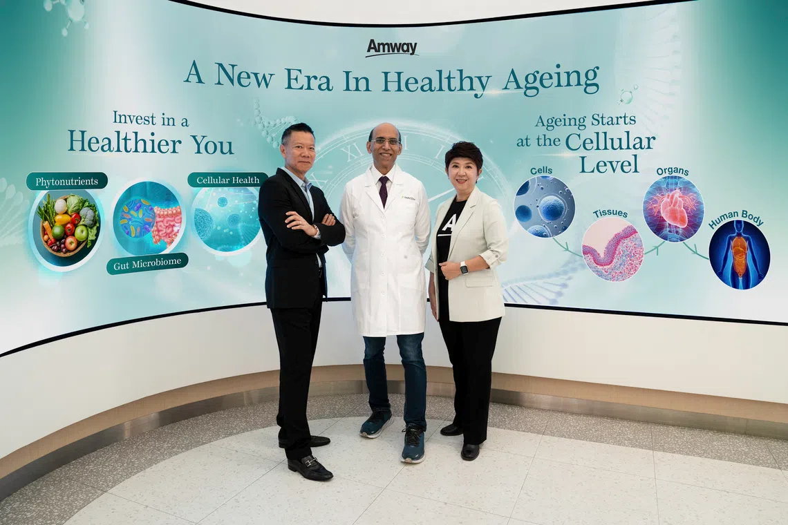

A DIGITAL LIFE+ EXPERIENCE
健康、美与事业，变成一场体验。
不是把 PPT 搬到网页，而是让访客滑动、点击、探索、测试、观看与提问。
HEALTH · BEAUTY · BUSINESS · TEAM · EVENTS · AI CONCIERGE · HEALTH · BEAUTY · BUSINESS · TEAM · EVENTS · AI CONCIERGE ·

不是把 PPT 搬到网页，而是让访客滑动、点击、探索、测试、观看与提问。

每个模块都有自己的视觉语言和互动，不再是静态 slide。
用简单的选择题、热点地图和 AI Concierge，让访客自己探索。
滚动出现动画、3D hover、A→B 动态路径、热点地图、Beauty Profile、计数器、活动画廊和 AI 对话。
这只是生活方式教育工具，不是医疗检测或诊断。